11 个月，开极氪7X跑两万公里，用车总结及好物分享
一、引子
这篇文章是 8月 3 日发布的，因为 7 月份开了 5000km+，有一些用车体验和感受，便整理成文章发布出来了。
7 个月开极氪7X跑16000km后，分享这 5 个真实用车体验

没想到的是，这篇文章居然被某些账户看上了，各种账户都有，用同一个标题不停的发布内容，已经举报不过来了。
现在已经开了两万多公里，首保已经在极氪家完成，是时候再分享下用车总结啦。
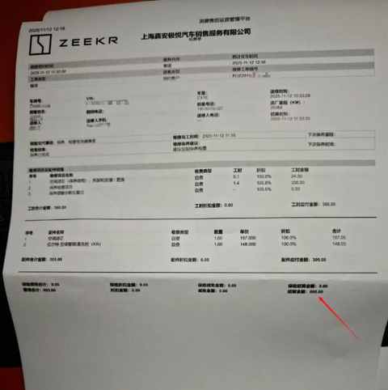
总计花费为 665 元， 动力电池健康度99.73%，下面是之前有感而发，写的另外两篇文章：
拒绝偏科，回归实用：极氪7X，为家庭用户打造的一款“正常”的纯电 SUV
开了7年混动后，我为何最终投向纯电？一位车主的心路历程
二、2万公里用车总结
因为经常在 B 站看汽车方面的内容，问答的形式深得我心，这次的用车总结就采取用自问自答的方式进行。
1️⃣ 上一辆车是哪款，试驾和对比了哪些车？
上一辆车是：比亚迪唐 2025 年款，比亚迪的混动车型
前比亚迪车主，聊聊近两年试驾的 11 款自主品牌纯电车：小鹏、蔚来、极氪……
总计试驾 11 款国产新能源车，时间跨度一年半。
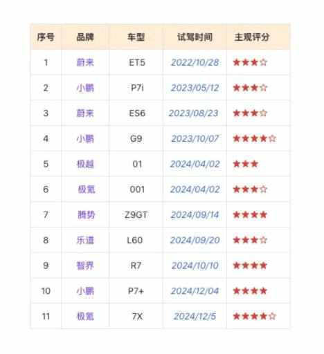
2️⃣ 最惊喜的点和最想优化的缺点？
① 最惊喜的点：
作为家用 SUV，操控性和运动性居然不错，变道和超车的时候很丝滑。
但跑山路时的运动感不足，体现为踩电门稍有迟滞，即便是设置为运动模式也有明显迟滞感。
② 最想优化的缺点：
低速过减速带或坑洼路面时候，奇怪的横向左右晃动，实在是让人难受。
不知道工程师是如何取舍的，这种晃动如果在后排坐人的情况下，司机还好，但乘客肯定很不舒服。
3️⃣ 为什么选极氪7X？
在预算范围，配置全面，符合需求。
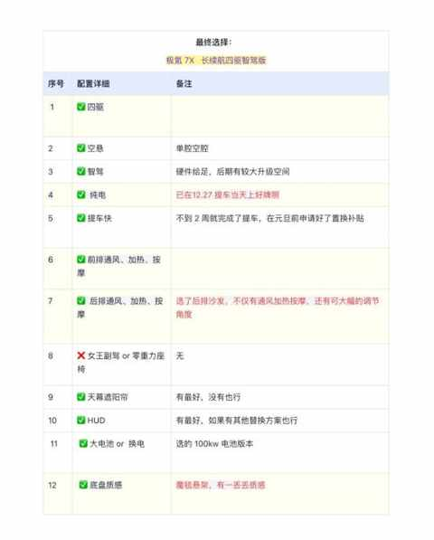
4️⃣ 买的哪个版本，选配了吗？
四驱、100 度电池、 白色车身、 浅色内饰。
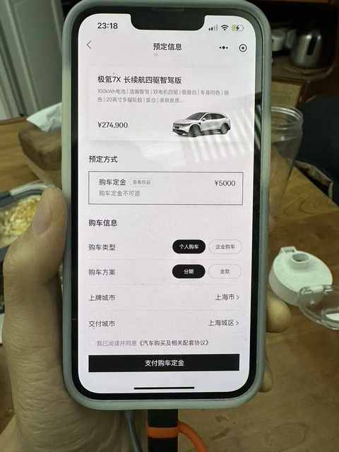
多加 5000 元，选配了后排沙发，如果日常一家人一起出行多，建议选配上。
5️⃣ 开两万公里后，最想要的配置或功能是什么？
① 最想要的配置：
前备箱电动开启和关闭，因为日常用车，前备箱比后备箱方便很多。
在各个平台都有检索均未搜到第三方能改把前备箱改电动的，倒是有不少改电子后视镜的。
② 最想要的功能：
1）辅助驾驶能力提升！
现在的辅助驾驶，我只敢在高速路况比较好且车流量不大的的时候用，城区道路从来不开。
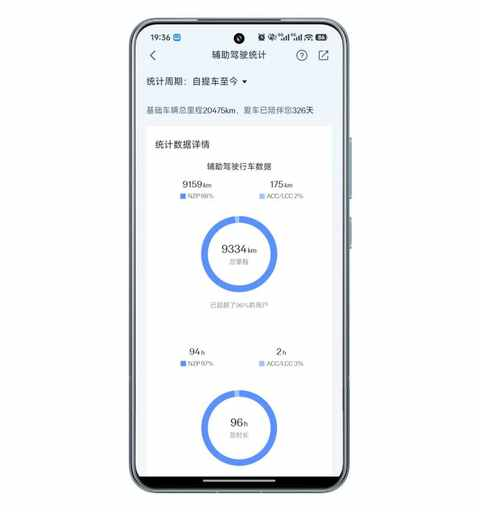
另外就是，分享不了单次使用辅助驾驶的数据，只能看总览，这个功能车主需要能看到，我们也想把相关数据分享给朋友们。
2）极拓功能！！
现在车机能安装的 APP 太少啦，吉利旗下其他车有的 极拓功能，还不给到极氪的车也是搞不懂，软件部门都整合挺久了。
6️⃣ 快一年了，白色内饰耐脏吗，后悔吗？
不后悔，白色内饰的观感很好，也比预期的耐脏很多。
已经买了专门的内饰清洁剂，准备择机自己仔细擦拭污渍比较多的地方。
下面为 11 月 18 日下午四点多的实拍图，光线不是特别好，但是也足够了，后面早上的时候再仔细观察下。
方向盘左右两侧和底部有明显使用痕迹：
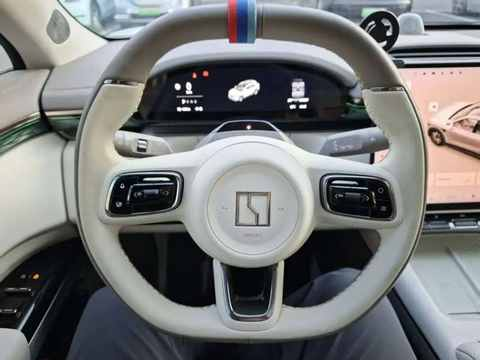
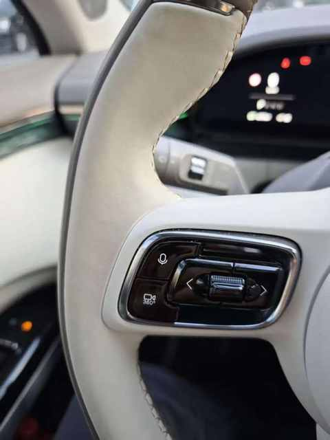
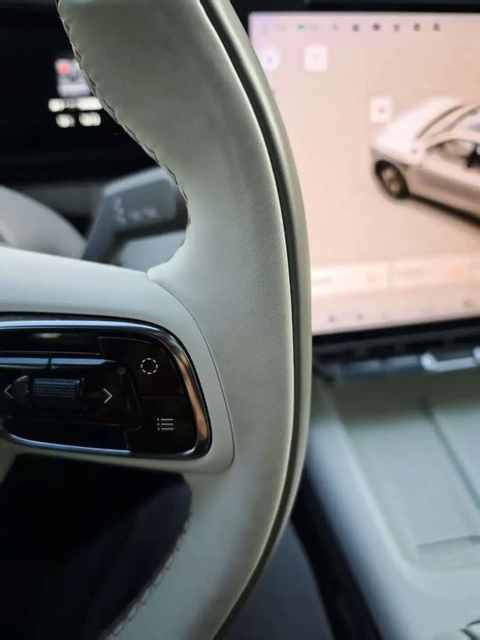
主副驾的门把手位置及杯架位置：
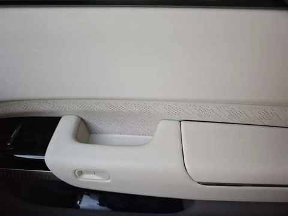
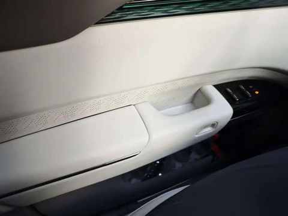
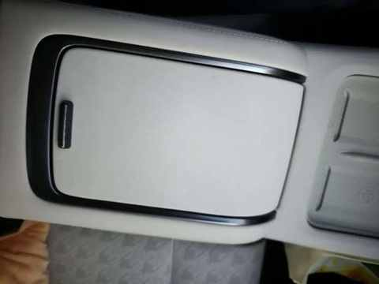
主驾座椅位置：
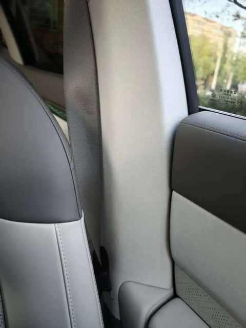
后排是儿子坐，他是真的不讲究，在后排视角下，看前排座椅背部有各种灰色污渍，要找时间擦拭干净：
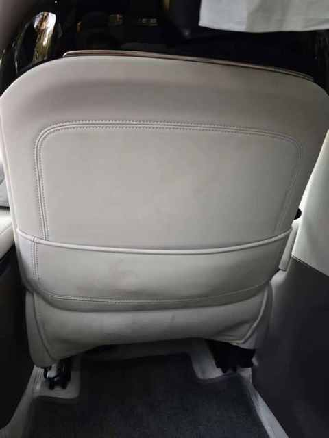
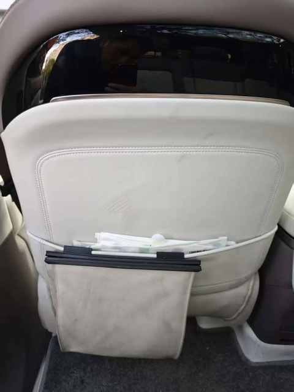
后排座椅无明显污渍：
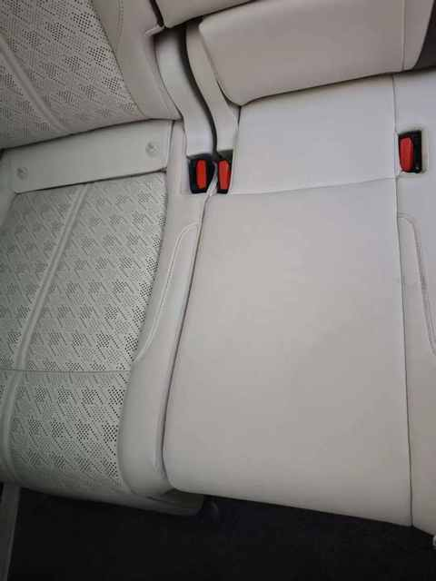
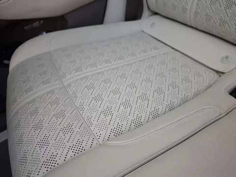
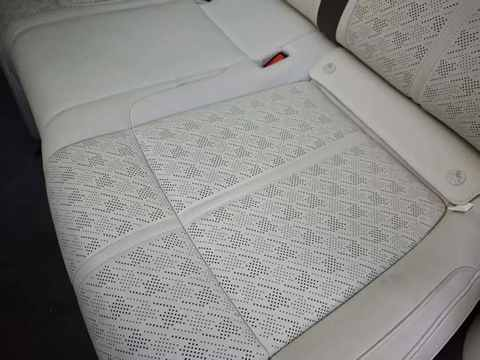
7️⃣ 有异响和跑偏吗？
我这个版本没有出现异响和跑偏。
提车时间是 2024 年 12 月 27 日，提车位置在上海。
8️⃣ 面对极氪 7X 的焕新版，有什么想说的？
改得挺好，情绪稳定！
老车主看了极氪7X的焕新版之后：情绪稳定！
9️⃣ 能耗满意吗？
满意，是这个造型和车重下的正常水平，绝对不是电动纳智捷。
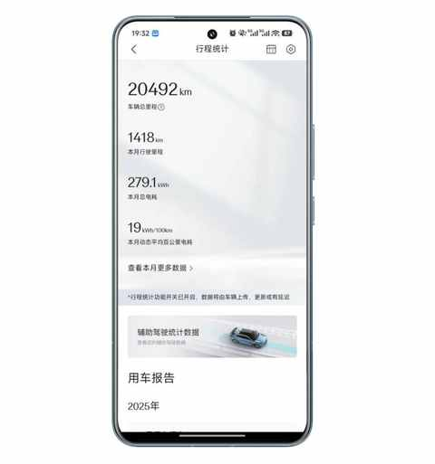
可能接下来这个词会越来越少的被提及，因为 00 后肯定都不知道纳智捷是什么。
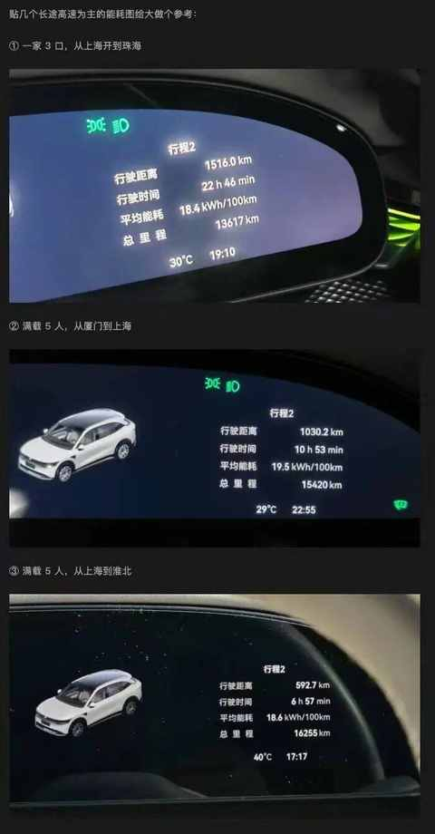
🔟 做了哪些装潢？
没贴车衣或改色膜，只要两项涉及到装潢。
① 贴了隔热膜
在超级车间的店贴的 3M 的隔热膜，选的透光度高一些的。
② 安装了全包脚垫
在抖音上刷到的一个，提车当天开过去的，当场选，制作好后师傅安装。
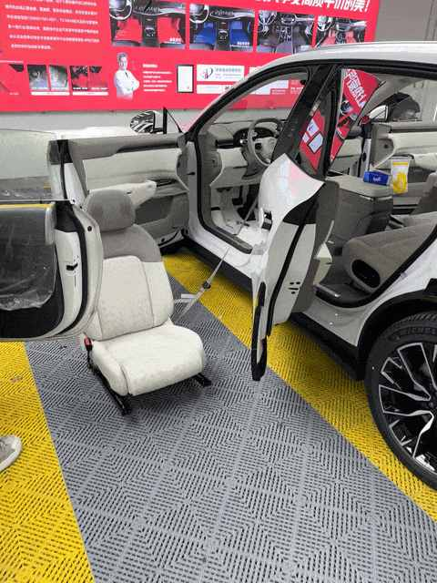
PS：安装全包脚垫，需要拆装主副驾座椅。
三、好物分享
分享5个好用的小物件，或许有你能用上的。
1️⃣ NFC 钥匙卡片
在闲鱼买的领克的 NFC 卡片，顺利绑定成功。
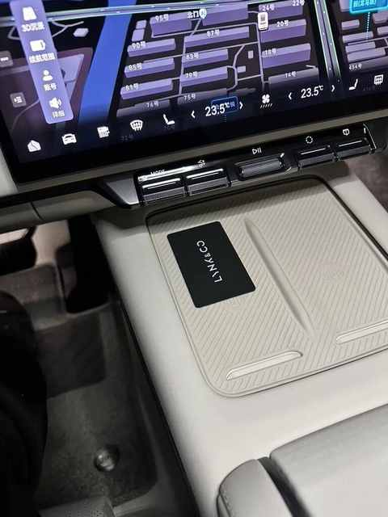
2️⃣ 可放在扶手箱的 ETC
支持太阳能充电和插线充电，接口为 Type-c，一个季度充电一次即可。
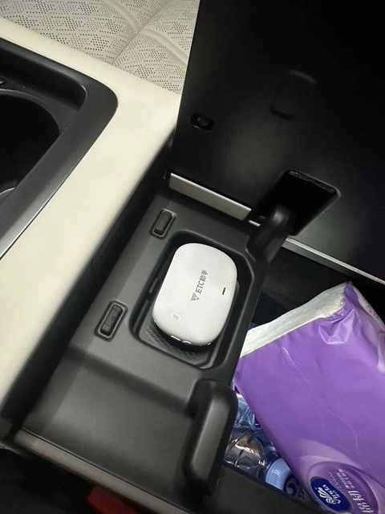
3️⃣ 便携充放电枪
既能充电也能放电，自带一个收纳袋，能放在后备箱的夹层里面。
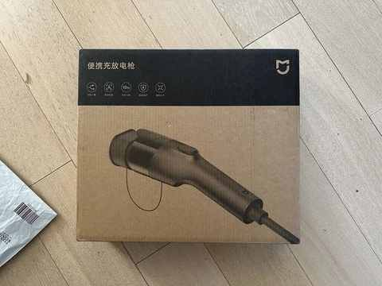
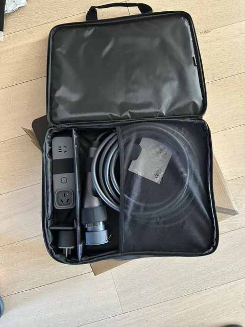
4️⃣ 手机支架
放屏幕左边或右边都行，球头接口方便拓展，磁吸或其他类型手机支架。
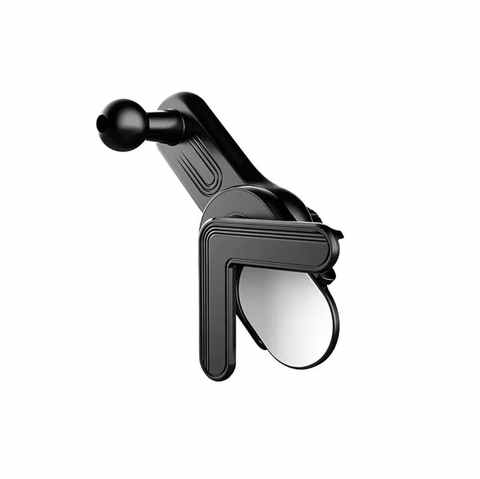
5️⃣ 转接头和转接线
① 转接线是 USB 转 C 口的
用于插行车记录仪的 U 盘。
因为原始的位置，比较隐蔽，而且还是 USB 接口非 C 口，有一个拔下来再插上去用了 10 多分钟才搞定。
另外，还出现一次颠簸后，U 盘松动的行车记录仪未正常启动，好在及时发现该情况。
使用转接线之后，没有再出现此类情况。
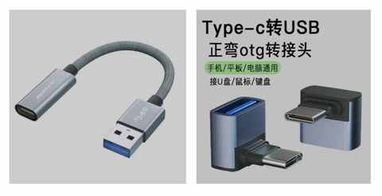
② 转接头用于放音乐文件
因其正弯的造型，插在接口上的时候，是贴边的，不会侵占过多空间。
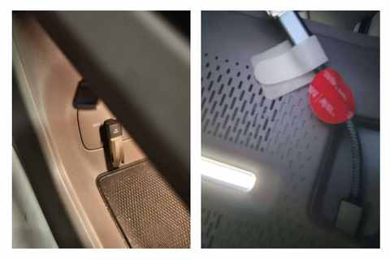
四、结语
综上，极氪 7X 是一款我挺满意的一款家用SUV，也是我的家庭唯一用车，满分 100 分能给到 85 分。
如果再把智驾狠狠升级下，再给老车主一些升级的方案，还能再加几分。
希望这些 用车总结及好物分享， 能对你有所帮助，也祝你用车愉快、身体健康、万事如意！